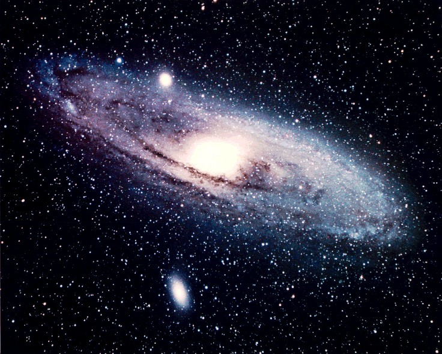

Dados Interessantes
- Além da Via Láctea, é a galáxia mais estudada.
- Suas duas galáxias satélite, Messier 32 e Messier 110, sãovisiveis em binóculos.
- Sua distância em relação a Terra ainda não foi definida.

A galáxia de Andromeda(Messier 31,NGC 224) é uma galáxia espiral localizada a cerca de 2,54 milhões de anos-luz de distância da Terra, na direção da constelação de Andromeda.